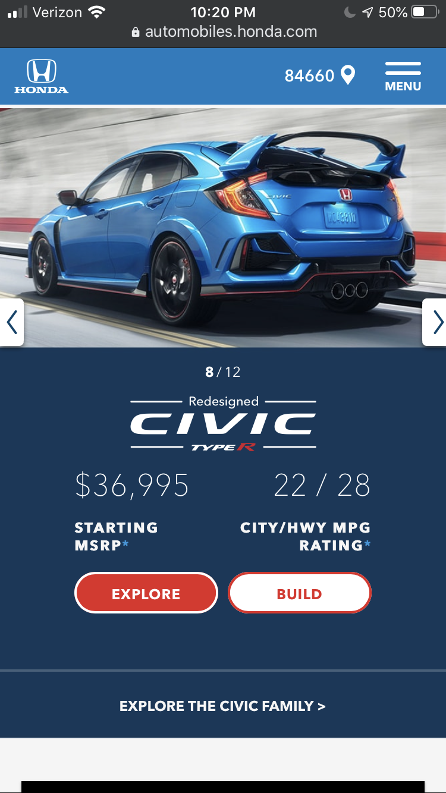

PARC: Repetition
Honda Civic Type R
Honda.com
The principle of repetition is used effectively in this page. They have used repeating color schemes to enhance the overall look of the page. Honda wants to emphasize their new blue color for this particular model, so they have designed the entire page around it. They also pull the red accents from the car into the mix with button accents. The use white repeated on fonts and accents for easy reading.
Hick's Law
Drumeo
Drumeo.com
Hick’s Law teaches designers to avoid and eliminate distracting options on their sites. This screenshot is a good example of relatively simple choices available on the page. There is a small, helpful navigation menu at the top and a button in the center of the page to start an introductory video that explains what the site is all about and how you can get started with their drum lessons.
Visual Hierarchy
Google.com
Visual hierarchy is used well on the google search site. This example shows the Google logo in bright colors at the top of the page in a semi-bolded font to stand out as a secondary element on the page. The very prominent video image in the search results is purposefully displayed to take up the majority of the page and draw attention as the number one result to the search criteria.